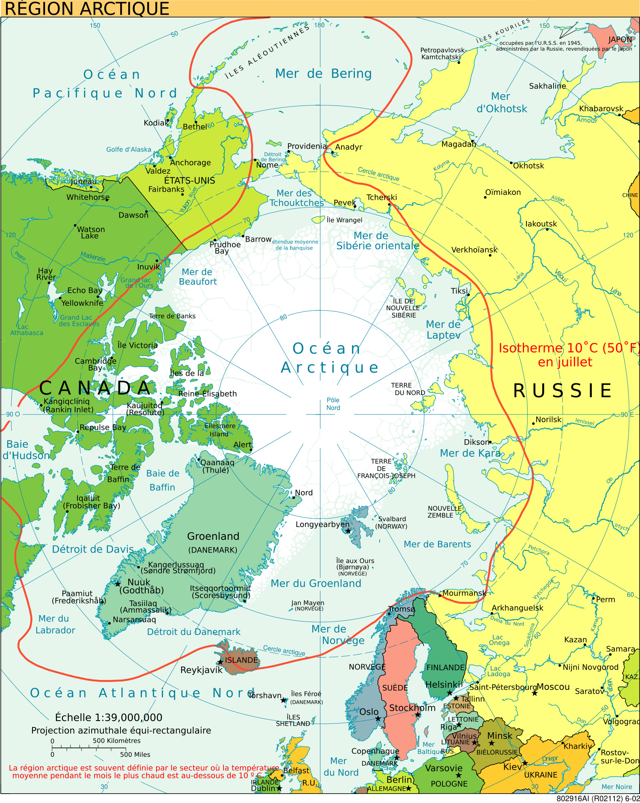
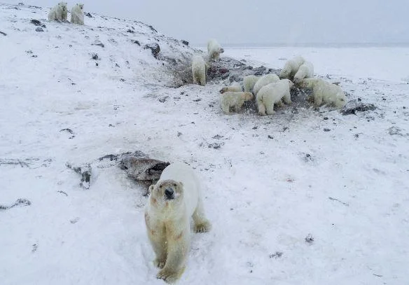
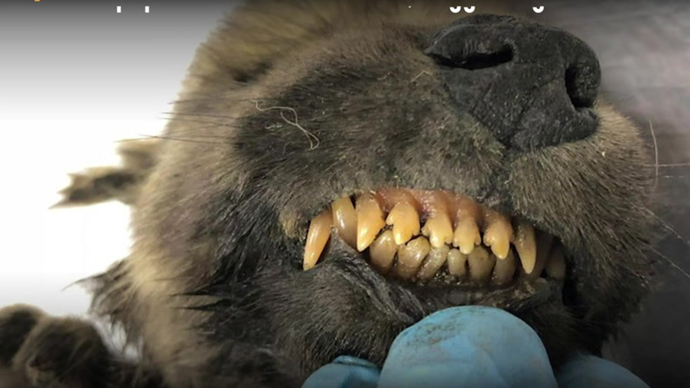
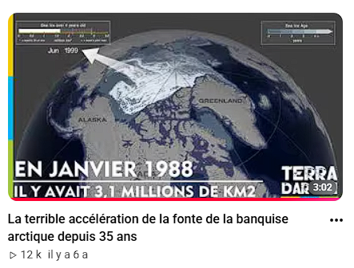
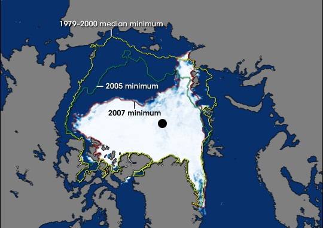
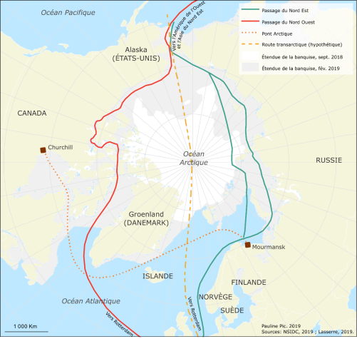
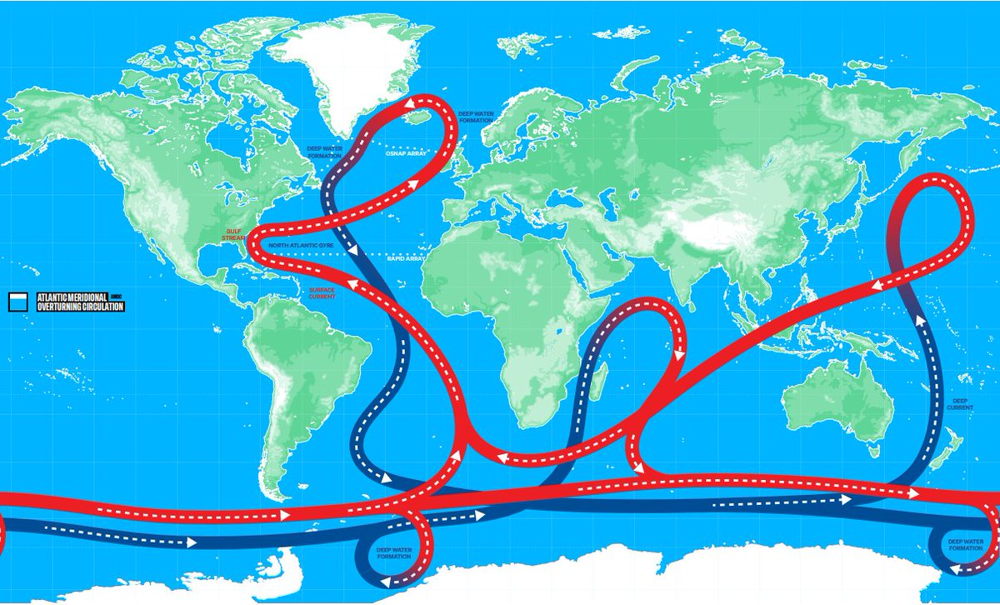
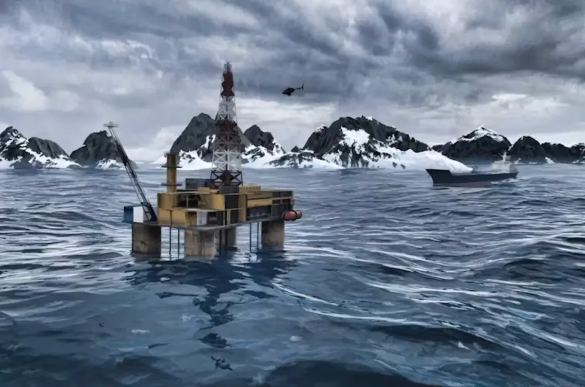

Thomas - Timéo
L'Arctique
Nouvel Eldorado ?
Alaska | Canada | Russie | Groenland | Norvège
Plan de l'exposé
- I Qu'est-ce que l'Arctique ? Les effets visibles
- II L'Arctique face au réchauffement climatique
- III Les routes maritimes arctiques
- IV Ressources et enjeux géopolitiques
Introduction
L'Arctique, c'est quoi ?
La région où la température moyenne
du mois le plus chaud reste
en dessous de 10 degrés celsius
Pôle Nord - Océan Arctique - Alaska, Canada,
Groenland, Norvège, Russie

Doc 4 - Région arctique
Document 1
56 ours polaires
aux portes d'un village
aux portes d'un village
Tchoukotka, Russie - extrême nord-est
Les ours se rapprochent des habitations car la banquise se forme de plus en plus tard. Elle est leur terrain de chasse pour les phoques.
Cause : banquise tardive


Document 2
Un canidé mort
il y a 18 000 ans
il y a 18 000 ans
Retrouvé intact en Sibérie (2018)
Fourrure, dents, cils - parfaitement conservés. Rendu possible par la fonte du permafrost.
Cause : fonte du pergélisol
Ces deux faits ont une cause commune
Le dérèglement
climatique
climatique
🐻❄️
Banquise tardive
Les ours ne peuvent plus chasser les phoques
🧊
Permafrost qui fond
1/4 des terres émergées de l'hémisphère nord
🌡️
Libère du méthane
La fonte aggrave encore le réchauffement
II. Réchauffement climatique
L'Arctique : épicentre du réchauffement
+2,3 °C
Grand Nord canadien
depuis 1948
depuis 1948
+0,8 °C
Moyenne mondiale
sur la même période
sur la même période
2x
plus rapide
qu'ailleurs
qu'ailleurs
Côtes de Beaufort
- 30 à 40 m / an
érosion côtière
Île de Pelly Island
20 à 30x
plus rapide qu'ailleurs au Canada
Effondrement des infrastructures, libération de méthane, submersion des côtes...
Document 3 - Vidéo
La fonte de la banquise
La banquise atteint son maximum en mars, son minimum en septembre.
La vidéo Terra Darwin (2019) illustre l'accélération de la fonte depuis 35 ans.

▶'">
"L'accélération de la fonte
de la banquise arctique depuis 35 ans"
Terra Darwin, 17/09/2019 - 3:02 min

Doc 9 - Extension de la banquise : mars (max) / septembre (min)
III. Routes maritimes
Deux passages stratégiques
Passage du Nord-Est
Route Maritime du Nord, côte russe
Navigable surtout en été. Courant nord-atlantique chaud.
Passage du Nord-Ouest
Au nord du Canada
Plus difficile. Courants froids, détroits étroits.

Doc 12 - Routes maritimes du pôle Nord
Document 13
Trafic comparé : routes mondiales vs arctiques
Détroit de Malacca
84 456 navires
Canal de Suez
17 550 navires
Canal de Panama
13 795 navires
Passage du Nord-Est
27 navires
Passage du Nord-Ouest
5 navires
Le trafic arctique reste très marginal - il augmente depuis 2008, mais ce sont surtout des navires de destination (ravitaillement local).

Courants marins et leur influence
Pourquoi une différence NE / NO ?
Côte russe (NE)
Courant chaud de la dérive nord-atlantique
Retarde la formation de la glace. Moins encombrée.
Côte canadienne (NO)
Courants froids, détroits étroits
La glace se forme plus tôt et reste piégée dans les détroits.
IV. Ressources
Un véritable Eldorado
Charbon, pétrole, fer, zinc, plomb, uranium...
29%
réserves mondiales de gaz
10%
réserves mondiales de pétrole
Estimation US Geological Survey (USGS, 2008). Les gisements de gaz arctiques surpassent ceux de la Russie et de l'Iran.

Doc 10 - Plateforme pétrolière en Arctique
Document 11 - Pêche
Les ressources halieutiques
🐟
800
espèces de poissons migrantes
vers les pôles, à 26 km/an
📜
16
ans de moratoire
Accord international sur la pêche industrielle arctique
Zone interdite
200 km autour du pôle géographique. Une superficie comparable à la Méditerranée. Pourrait être accessible en été d'ici peu.
Écosystèmes à évaluer
Enjeux géopolitiques
5 puissances, 1 océan contesté
États-Unis
Canada
Russie
Norvège
Danemark
Rivalités sur :
- Zones économiques exclusives (200 miles marins)
- Plateau continental et ressources souterraines
- Contrôle des routes maritimes
- Bases militaires stratégiques

Doc 9 - Arctique dans la mondialisation
Bilan
Potentialités et vulnérabilités
| Potentialités (+) | Vulnérabilités (-) |
|---|---|
| 29% du gaz mondial, 10% du pétrole non-découverts | Réchauffement 2x plus rapide qu'ailleurs |
| Nouvelles routes maritimes (gain de temps et de distance) | Fonte du permafrost : méthane + infrastructures |
| Ressources minières : fer, zinc, uranium... | Érosion côtière accélérée (Beaufort : -30 à 40m/an) |
| 800 espèces de poissons migrantes, nouvelles zones de pêche | Menace sur la biodiversité (ours polaires, faune) |
| Tourisme polaire et recherche scientifique | Tensions géopolitiques entre grandes puissances |
| Développement économique des États riverains | Écosystèmes uniques et fragiles |
Conclusion
L'Arctique : Eldorado
ou piège ?
ou piège ?
Comment exploiter ces potentialités
sans aggraver les vulnérabilités ?
Un défi pour les États riverains, mais aussi pour la communauté internationale.
Merci pour votre attention